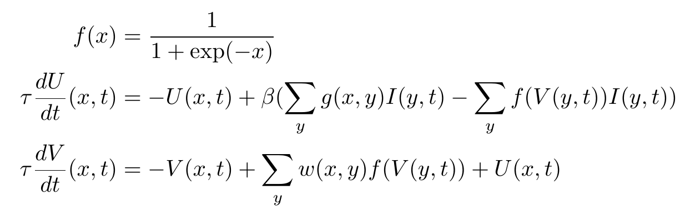

Focus
This modules determines where to focus attention from a grayscale image produced, for example by the color_filter module. The focus-node performs a competition to determine the region where the input grayscale image is locally maximal.
Overview
The competition is done with a neural field defined in the paper "Dynamic formation of self-organizing maps" (PDF). The equations governing the dynamic of the neural field are given below. The position $x$ is a 2D discrete position $x \in [0, N-1]^2$.

where :
- the weights $w(x,y)$ is a difference of gaussians $w(x,y)=A_+ \exp({-\frac{d(x,y)^2}{2 \sigma_+^2}}) - A_- \exp(-{\frac{d(x,y)^2}{2 \sigma_-^2}})$ is a difference of gaussians with parameters ($A_+,\sigma_+,A_-,\sigma_-$) ,
- $g(x,y)=\exp(-\frac{d(x,y)^2}{2 \sigma_g^2})$ is a gaussian of parameter $\sigma_g$
- $d(x,y)$ is a distance between locations $x$ and $y$ in the field. It can be the euclidean distance $d(x,y) = \sqrt{\sum_i (x_i-y_i)^2}$ or a circular symmetric distance. For a neural field of side $N$, the circular symmetric distance is defined as $d(x,y) = \sqrt{\sum_i \min(|x_i-y_i|,N-|x_i -y_i|)^2}$
ROS integration
Focus
The focus module provides a single node which can be tested with the focus-demo.launch launch file which works with a USB camera and the color_filter module for providing a grayscale input to the neural field.
You can also test the full loop with the lgn2v1, color_filter and focus nodes by calling:
This distorts the input, filter the distorted image, performs the competition and loops back where to shift the attention to the lgn2v1 node.
The communication with the node is realized by topics and a dynamic reconfiguration of parameters. The topic are the following ones:
roslaunch focus focus-demo.launch
You can also test the full loop with the lgn2v1, color_filter and focus nodes by calling:
roslaunch focus focus-lgn-demo.launch
This distorts the input, filter the distorted image, performs the competition and loops back where to shift the attention to the lgn2v1 node.
The communication with the node is realized by topics and a dynamic reconfiguration of parameters. The topic are the following ones:
| Name | Message | Direction | Meaning |
| in | sensor_msgs/Image | subscribe | input grayscale image |
| out | sensor_msgs/Image | publish | neural field output activities $f(v(x,t))$ |
| shift | geometry_msgs/Point | publish | where the input is locally maximal $(lw,lh,0)$ with $lw, lh \in [-0.5, 0.5]^2$ as defined on lgn2v1 |
Locus
The locus node is similar to focus, but the computation is made from a convolution (i.e. no neural field involved).
or
roslaunch focus locus-demo.launch
or
roslaunch focus locus-lgn-demo.launch